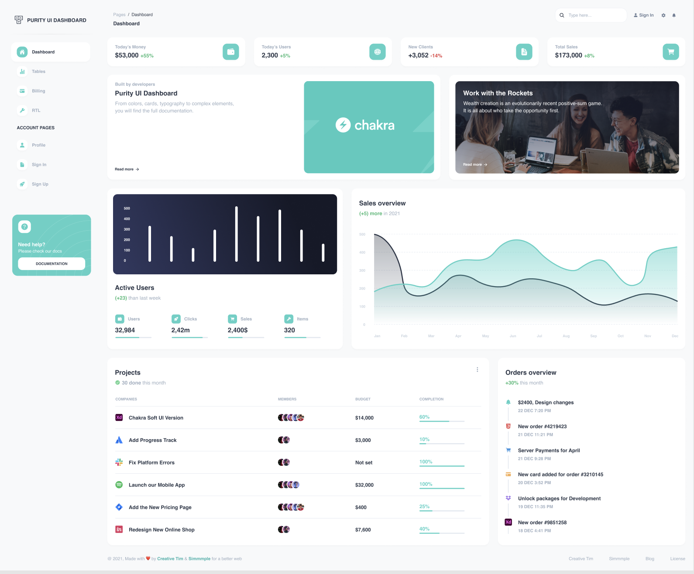

บทเรียน 03 · Tailwind CSS พื้นฐาน (Tailwind Essentials)
Utility-First และ Utilities หลัก
Utility-First & Core Utilities
จาก SCSS สู่ Utility
ในคอร์สที่ผ่านมา เราจัดสไตล์แบบ "ไฟล์ CSS ต่อ component": ปุ่มหนึ่งปุ่มคือ class ชื่อดี ๆ หนึ่งตัวในไฟล์ .module.scss แล้วเขียน CSS ในไฟล์นั้น
/* Button.module.scss */
.button {
border-radius: 12px;
background-color: #4fd1c5;
padding: 8px 16px;
font-weight: 700;
color: white;
&:hover {
background-color: #38b2ac;
}
}
ปุ่มเดียวกันในโลก Tailwind ไม่มีไฟล์ CSS เลย — สไตล์ทั้งหมดคือ class เล็ก ๆ เรียงกันใน markup
<button class="rounded-xl bg-teal-400 px-4 py-2 font-bold text-white hover:bg-teal-500">
SIGN UP
</button>
นี่คือแนวคิด utility-first: หนึ่ง class = หนึ่งการประกาศ CSS (rounded-xl คือ border-radius: 0.75rem, px-4 คือ padding ซ้ายขวา 1rem) เราประกอบดีไซน์ขึ้นใน markup โดยตรง ไม่ต้องสลับไฟล์ ไม่ต้องตั้งชื่อ class
"แต่ HTML มันรกไม่ใช่เหรอ?"
ใช่ — class ยาวขึ้นจริง และนี่คือข้อแลกเปลี่ยนที่ควรมองอย่างตรงไปตรงมา สิ่งที่ได้กลับมาคือ
- Locality — สไตล์อยู่ที่เดียวกับ markup อ่าน component จบในไฟล์เดียว ไม่ต้องกระโดดไปไฟล์ SCSS เพื่อรู้ว่า
.card-headerหน้าตาเป็นยังไง - ไม่มี naming fatigue — ไม่ต้องคิดชื่อ
.card-header-inner-wrapperอีกต่อไป - ไม่มี dead CSS — ลบ component ทิ้ง สไตล์หายไปด้วย ไม่มี class ผีค้างในไฟล์ CSS ที่ไม่มีใครกล้าลบ
- Constraint ในตัว — spacing และสีมาจาก scale ที่กำหนดไว้ (
p-4,teal-400) ทำให้ UI สม่ำเสมอโดยไม่ต้องพยายาม
ส่วนต้นทุน class ยาว ๆ นั้นมีคำตอบอยู่ — แต่ไม่ใช่การกลับไปเขียนไฟล์ CSS คำตอบคือแยกเป็น React component ซึ่งเป็นเรื่องของบทเรียน 15 ทั้งบท ตอนนี้ขอให้ทนความยาวไปก่อน
ข้อเข้าใจผิดที่พบบ่อย: "แบบนี้ก็ inline style สิ" — ไม่ใช่ เพราะสามอย่างนี้ทำใน style="" ไม่ได้เลย: responsive prefix (md:grid-cols-2), state (hover:bg-teal-500) และ design token จาก theme — สองอย่างแรกเจอบทถัดไป อย่างสุดท้ายบทเรียน 05
เหตุผลสุดท้ายที่ utility-first เข้ากับ workshop นี้เป็นพิเศษ: โค้ดที่ Cursor Agent สร้างมาจะอ่านจบใน diff เดียว — สไตล์ทั้งหมดอยู่ตรงหน้า ไม่ต้องเปิดไฟล์ CSS ประกอบ ทำให้การ review (ครึ่งหลังของ workshop) เร็วขึ้นมาก
Utilities หลัก — สร้าง stat card หนึ่งใบ
วิธีเรียน utility ที่ดีที่สุดคือใช้มันสร้างของจริง เป้าหมายคือการ์ด "Today's Money" ใบแรกจากหน้า Dashboard (มุมซ้ายบนของภาพ)

สร้างทีละชั้นใน App.tsx ของโปรเจกต์ที่ตั้งไว้บทที่แล้ว เริ่มจากกล่องการ์ดเปล่า
<div class="rounded-2xl bg-white p-4 shadow-sm">...</div>
p-4—padding: 1rem— ตัวเลขของ Tailwind คือหน่วยละ 0.25rem (4 = 1rem, 6 = 1.5rem, 8 = 2rem) จำ scale นี้ได้ที่เหลือเดาได้หมดrounded-2xl— มุมโค้ง 1rem — การ์ดของ Purity โค้งกว่าค่า default (rounded-lg) พอสมควรbg-white+shadow-sm— พื้นขาว เงาบาง ๆ — สูตรการ์ดของดีไซน์นี้ทั้งดีไซน์
ใส่ข้อความสองบรรทัดด้านซ้าย: ป้ายกำกับ กับตัวเลข
<p class="text-sm font-medium text-gray-400">Today's Money</p>
<p class="text-xl font-bold text-gray-700">
$53,000
<span class="text-sm font-bold text-green-500">+55%</span>
</p>
- ขนาดตัวอักษร:
text-sm(0.875rem) →text-base→text-lg→text-xl→ ใหญ่ขึ้นเรื่อย ๆ - น้ำหนัก:
font-medium(500) /font-semibold(600) /font-bold(700) - สีตัวอักษร:
text-gray-400เทาอ่อนสำหรับป้ายรอง,text-gray-700เข้มสำหรับตัวเลขหลัก,text-green-500สำหรับเปอร์เซ็นต์ที่โต — เลขยิ่งมากสียิ่งเข้ม (50 อ่อนสุด, 950 เข้มสุด) - เกร็ดที่จะได้ใช้บ่อย: modifier ความโปร่งใส เช่น
bg-black/50คือดำโปร่ง 50%
กล่องไอคอนสีเขียวมิ้นต์ด้านขวา — สี่เหลี่ยมมุมโค้งที่มีไอคอนขาวอยู่กลาง
<div class="flex size-12 items-center justify-center rounded-xl bg-teal-400">
<svg class="size-6 text-white" ...></svg>
</div>
size-12— กว้างและสูง 3rem ในตัวเดียว (แทนw-12 h-12)flex items-center justify-center— สูตรจัดของให้อยู่กลางกล่องทั้งแนวตั้งแนวนอน ท่องได้เลย ใช้บ่อยที่สุดในสามโลก
ประกอบร่างทั้งใบ: ใช้ flex ดันข้อความไปซ้าย ไอคอนไปขวา
<div class="flex items-center justify-between rounded-2xl bg-white p-4 shadow-sm">
<div>
<p class="text-sm font-medium text-gray-400">Today's Money</p>
<p class="text-xl font-bold text-gray-700">
$53,000
<span class="text-sm font-bold text-green-500">+55%</span>
</p>
</div>
<div class="flex size-12 items-center justify-center rounded-xl bg-teal-400">
<svg class="size-6 text-white" viewBox="0 0 24 24" fill="currentColor" aria-hidden="true">
<path d="M21 7.5V6a3 3 0 0 0-3-3H6a3 3 0 0 0-3 3v12a3 3 0 0 0 3 3h12a3 3 0 0 0 3-3v-1.5h-6a3 3 0 0 1 0-6h6ZM15 12a1.5 1.5 0 0 0 0 3h6v-3h-6Z" />
</svg>
</div>
</div>
justify-between ดันลูกสองก้อนไปคนละฝั่ง — เทียบกับภาพดีไซน์: เหมือนแล้ว การ์ดใบแรกของเราเสร็จด้วย utility ล้วน ๆ ไม่มีไฟล์ CSS เพิ่มแม้แต่บรรทัดเดียว
อีกสอง utility ที่จะเจอถี่มากใน workshop นี้ ขอแนะนำล่วงหน้า
grid grid-cols-4 gap-6— ตาราง 4 คอลัมน์ ช่องไฟ 1.5rem — แถว stat cards ทั้งแถวคือสิ่งนี้ (บทถัดไปจะทำให้มัน responsive)w-full/max-w-*/mx-auto— กว้างเต็มพ่อแม่ / จำกัดความกว้าง / จัดกลาง — สามตัวนี้คือเครื่องมือคุม layout ระดับหน้า
คู่มือที่ควรเปิดคู่กันเสมอ
ไม่มีใครจำ utility ทั้งหมดได้ และไม่จำเป็น — เปิด tailwindcss.com/docs ค้างไว้ ช่องค้นหาของมันดีมาก (พิมพ์ "shadow" เจอทุกอย่างเรื่องเงา) และติดตั้ง extension Tailwind CSS IntelliSense ใน Cursor (ใช้ได้เพราะ Cursor คือ VS Code) — จะได้ autocomplete ทุก class และ hover เห็น CSS จริงที่ class นั้นสร้าง เครื่องมือสองตัวนี้สำคัญกว่าการท่องจำเยอะ
ตอนนี้เราสร้างของสวย ๆ บนจอเดียวได้แล้ว บทถัดไปทำให้มันรอดทุกขนาดจอ และตอบสนองต่อ hover กับ keyboard